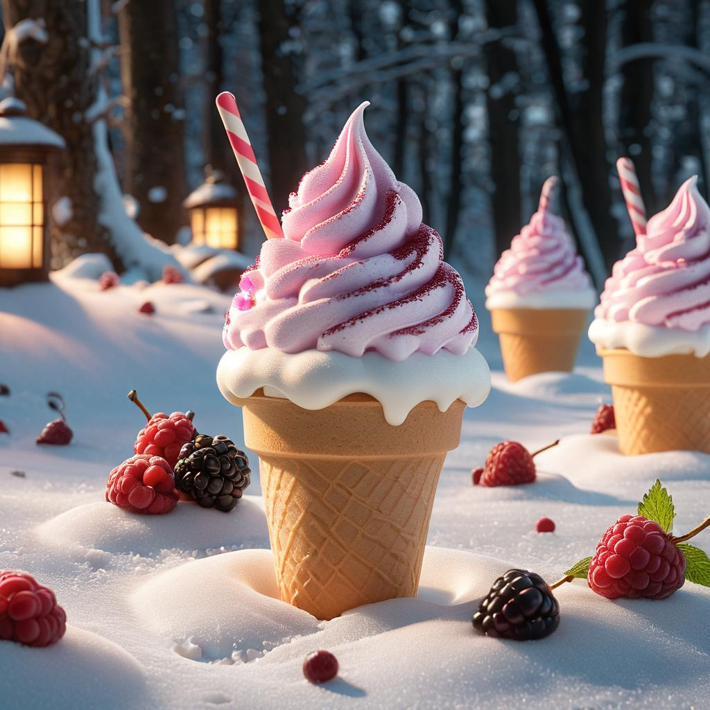
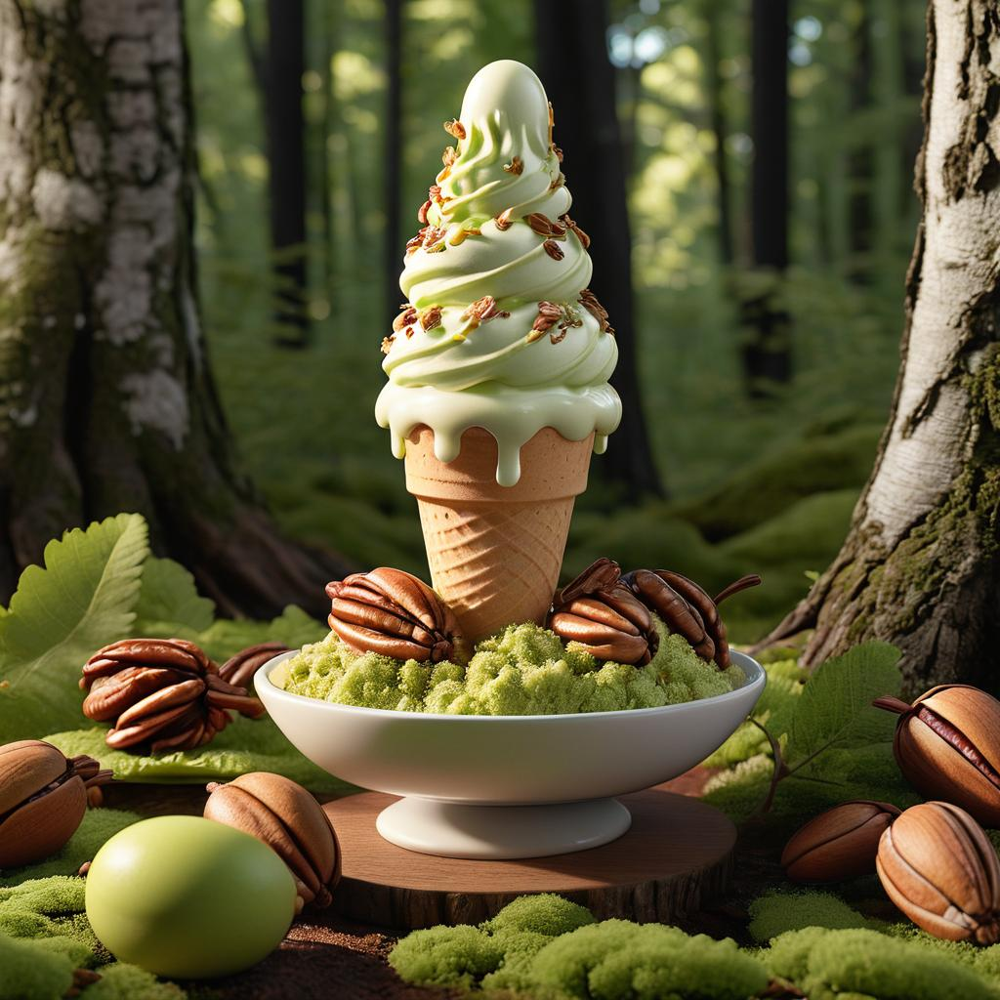
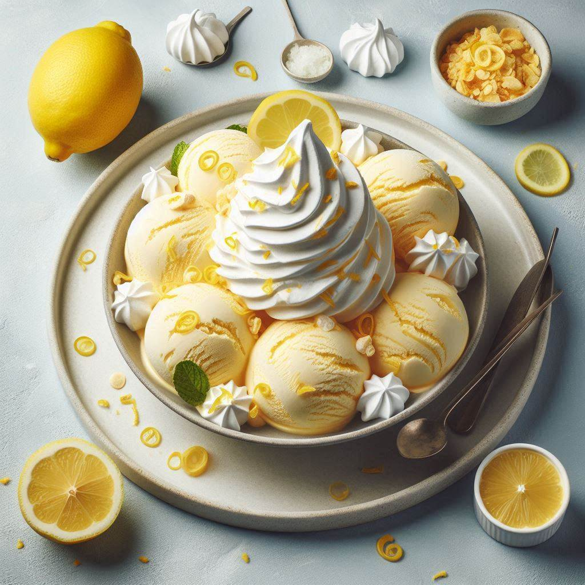
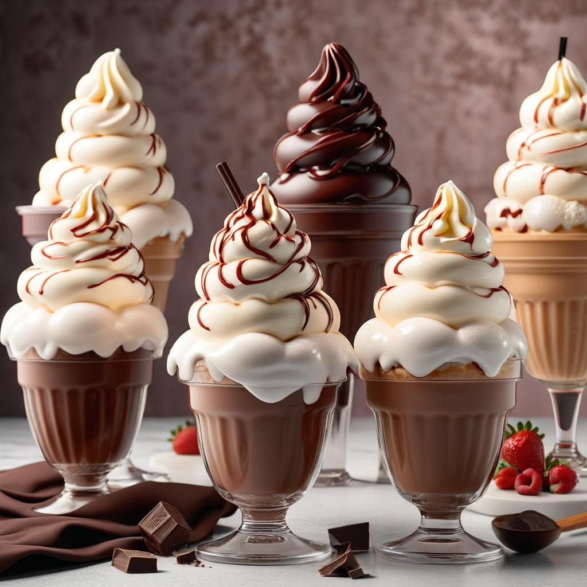

Nuestros Productos
En Helados del Polo Norte no encontrarás los típicos sabores de siempre. Atrévete a probar nuestras creaciones originales, como:
-  Aurora Boreal: Un baile de arándanos, frambuesas y moras, coronado con un remolino de crema de vainilla y un toque de miel.
-  Bosque Encantado: Un homenaje a la naturaleza con helado de pistacho, nueces pecanas y un toque de caramelo salado.
-  Nube de Limón: Un clásico reinventado con helado de limón real, ralladura de limón fresco y un toque de merengue crujiente.
-
 Fresa de la Luna: Un sueño hecho realidad con helado de fresa, queso mascarpone y un coulis de fresas silvestres.
Fresa de la Luna: Un sueño hecho realidad con helado de fresa, queso mascarpone y un coulis de fresas silvestres.
-  Sabores Clasicos: Vainilla, Chocolate, Fresa ¡preparados con la misma pasión y dedicación!.